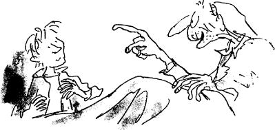

The next evening, Grandpa Joe went on with his story.
‘You see, Charlie,’ he said, ‘not so very long ago there used to be thousands of people working in Mr Willy Wonka’s factory. Then one day, all of a sudden, Mr Wonka had to ask every single one of them to leave, to go home, never to come back.’
‘But why?’ asked Charlie.
‘Because of spies.’
‘Spies?’
‘Yes. All the other chocolate makers, you see, had begun to grow jealous of the wonderful sweets that Mr Wonka was making, and they started sending in spies to steal his secret recipes. The spies took jobs in the Wonka factory, pretending that they were ordinary workers, and while they were there, each one of them found out exactly how a certain special thing was made.’
‘And did they go back to their own factories and tell?’ asked Charlie.
‘They must have,’ answered Grandpa Joe, ‘because soon after that, Fickelgruber’s factory started making an ice cream that would never melt, even in the hottest sun. Then Mr Prodnose’s factory came out with a chewing-gum that never lost its flavour however much you chewed it. And then Mr Slugworth’s factory began making sugar balloons that you could blow up to huge sizes before you popped them with a pin and gobbled them up. And so on, and so on. And Mr Willy Wonka tore his beard and shouted, “This is terrible! I shall be ruined! There are spies everywhere! I shall have to close the factory!” ’
‘But he didn’t do that!’ Charlie said.
‘Oh, yes he did. He told all the workers that he was sorry, but they would have to go home. Then, he shut the main gates and fastened them with a chain. And suddenly, Wonka’s giant chocolate factory became silent and deserted. The chimneys stopped smoking, the machines stopped whirring, and from then on, not a single chocolate or sweet was made. Not a soul went in or out, and even Mr Willy Wonka himself disappeared completely.
‘Months and months went by,’ Grandpa Joe went on, ‘but still the factory remained closed. And everybody said, “Poor Mr Wonka. He was so nice. And he made such marvellous things. But he’s finished now. It’s all over.”
‘Then something astonishing happened. One day, early in the morning, thin columns of white smoke were seen to be coming out of the tops of the tall chimneys of the factory! People in the town stopped and stared. “What’s going on?” they cried. “Someone’s lit the furnaces! Mr Wonka must be opening up again!” They ran to the gates, expecting to see them wide open and Mr Wonka standing there to welcome his workers back.
‘But no! The great iron gates were still locked and chained as securely as ever, and Mr Wonka was nowhere to be seen.
‘“But the factory is working!” the people shouted. “Listen! You can hear the machines! They’re all whirring again! And you can smell the smell of melting chocolate in the air!” ’
Grandpa Joe leaned forward and laid a long bony finger on Charlie’s knee, and he said softly, ‘But most mysterious of all, Charlie, were the shadows in the windows of the factory. The people standing on the street outside could see small dark shadows moving about behind the frosted glass windows.’
‘Shadows of whom?’ said Charlie quickly.
‘That’s exactly what everybody else wanted to know.
‘“The place is full of workers!” the people shouted. “But nobody’s gone in! The gates are locked! It’s crazy! Nobody ever comes out, either!”
‘But there was no question at all,’ said Grandpa Joe, ‘that the factory was running. And it’s gone on running ever since, for these last ten years. What’s more, the chocolates and sweets it’s been turning out have become more fantastic and delicious all the time. And of course now when Mr Wonka invents some new and wonderful sweet, neither Mr Fickelgruber nor Mr Prodnose nor Mr Slugworth nor anybody else is able to copy it. No spies can go into the factory to find out how it is made.’
‘But Grandpa, who,’ cried Charlie, ‘who is Mr Wonka using to do all the work in the factory?’
‘Nobody knows, Charlie.’
‘But that’s ahsurd! Hasn’t someone asked Mr Wonka?’
‘Nobody sees him any more. He never comes out. The only things that come out of that place are chocolates and sweets. They come out through a special trap door in the wall, all packed and addressed, and they are picked up every day by Post Office trucks.’
‘But Grandpa, what sort of people are they that work in there?’
‘My dear boy,’ said Grandpa Joe, ‘that is one of the great mysteries of the chocolate-making world. We know only one thing about them. They are very small. The faint shadows that sometimes appear behind the windows, especially late at night when the lights are on, are those of tiny people, people no taller than my knee…’
‘There aren’t any such people,’ Charlie said.
Just then, Mr Bucket, Charlie’s father, came into the room. He was home from the toothpaste factory, and he was waving an evening newspaper rather excitedly. ‘Have you heard the news?’ he cried. He held up the paper so that they could see the huge headline. The headline said: